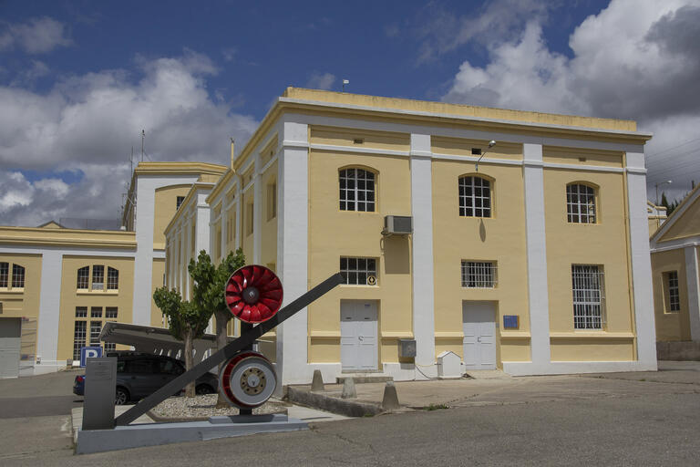

Visita · Tremp
L’Espai Patrimonial La Central és un equipament dedicat a donar a conèixer el patrimoni hidroelèctric i industrial del Pallars Jussà . Situat a l’antiga central hidroelèctrica de Talarn, permet…